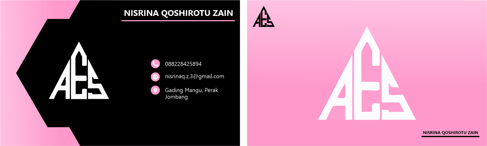
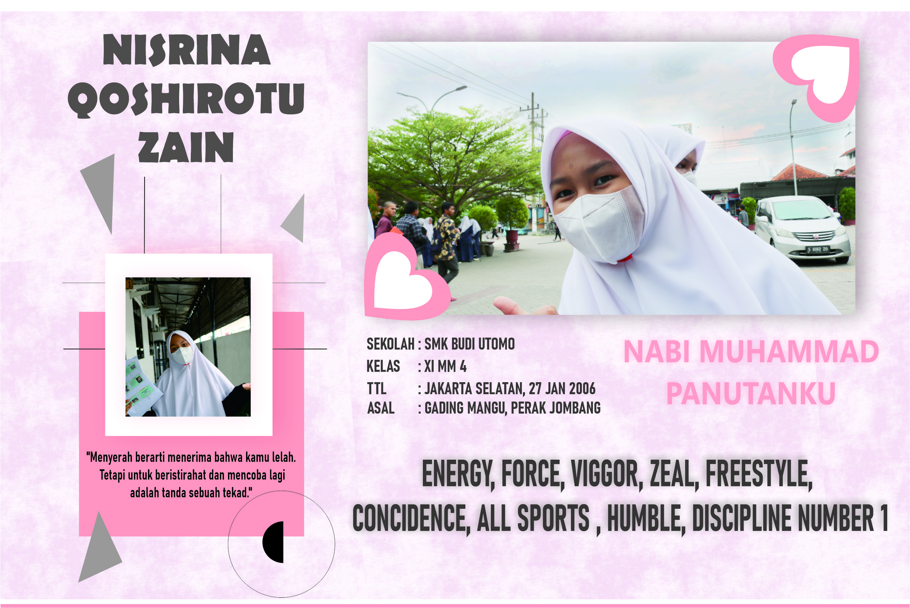
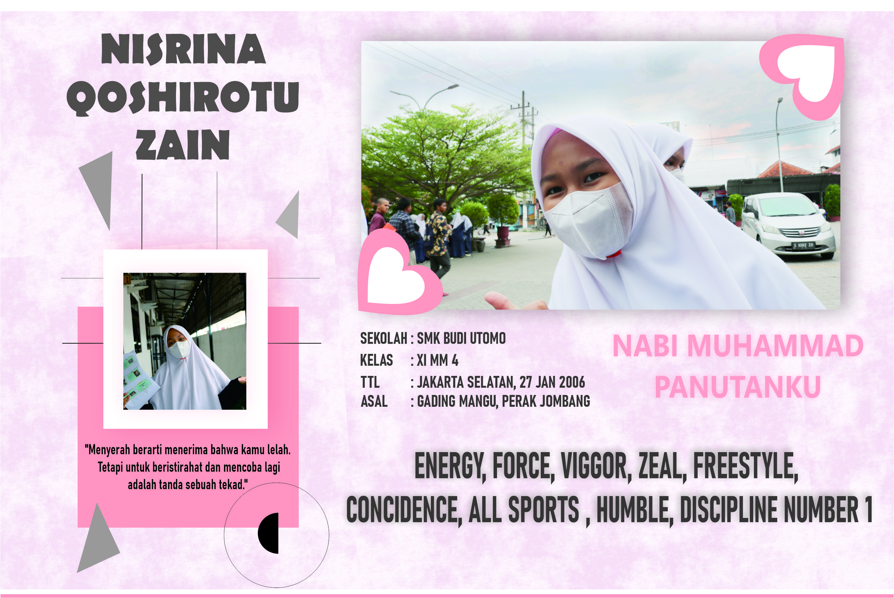
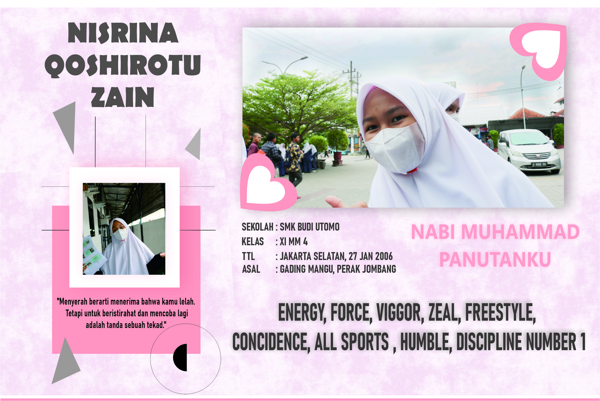
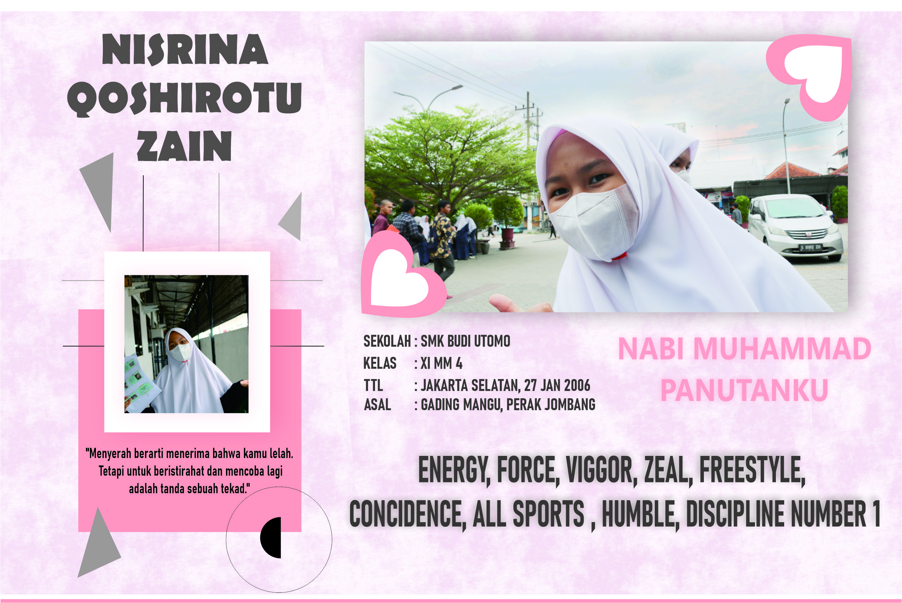

Membuat Kartu Nama dan Desain Banner

 


Pada Proyek ini Saya mengedit Kartu Nama, Banner, dan Biodata Pribadi.

Pada Proyek ini Saya mengedit Kartu Nama, Banner, dan Biodata Pribadi.
Dalam proyek ini, saya membuat Kartu Nama, Banner, dan Biodata Pribadi menggunakan Corel Draw dan Photoshop. Tujuannya adalah untuk mempelajari dasar-dasar desain grafis dan bagaimana menggabungkan elemen visual untuk menciptakan media yang menarik.